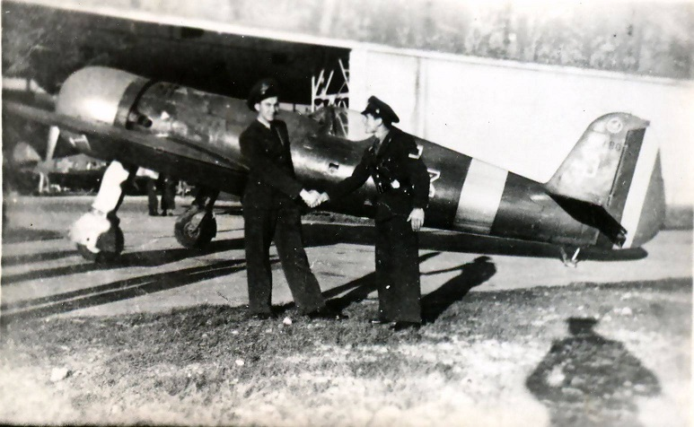

Scurtă istorie
Istoria aviației are o durată de peste două milenii. Astfel, cele mai vechi obiecte zburătoare realizate de om pot fi considerate zmeele realizate prin anul 200 î.Hr. în China și cu ajutorul cărora o persoană putea survola teritoriul inamic în timpul confruntărilor armate. Este cunoscut cazul prințului Yuan Huangtou, care după un astfel de zbor, a supraviețuit dezlegându-se de zmeul care îl purta în zbor. Aspirația spre zbor a lui Leonardo da Vinci a fost reprezentată prin diverse proiecte ale marelui geniu renascentist, dar nu a reușit să pună nimic în practică. În perioada cuprinsă între secolul al XVII-lea și al XIX-lea, observațiile asupra atmosferei au condus la realizarea baloanelor cu hidrogen. Având baza teoretică constituită din dinamica fluidelor și legile lui Newton, ia naștere aerodinamica modernă.
În prima jumătate a secolului al XIX-lea, sunt utilizate baloane cu aer cald pentru a se efectua chiar și acțiuni de luptă, cum este în cazul Războiului Civil American sau al Bătăliei de la Petersburg. Cuvântul aviație, cu accepția actuală, a fost introdus, în 1863, de către francezul Guillaume Joseph Gabriel de La Landelle (1812-1886), precursor în acest domeniu, in lucrarea "Aviation ou Navigation aérienne". Abia la începutul secolului XX, experimentele și realizările din domeniul aviatic au dovedit că este posibilă construirea unui aparat de zbor mai greu decât aerul.
Aviația în România
Realizările lui Aurel Vlaicu, Traian Vuia și Henri Coandă au determinat nașterea aviației românești simultan cu cea mondială. În 1906 Traian Vuia reușește primul zbor autopropulsat cu un aparat de zbor mai greu decât aerul.
Aurel Vlaicu realizează un avion sub forma mai multor modele (Vlaicu I, Vlaicu II) cu care, în 1912 câștigă cinci premii memorabile la un miting aerian din Aspern, Austria. Henri Coandă, descoperitor al efectului care îi poartă numele (Efectul Coandă), realizează în 1910 primul avion cu propulsie reactivă (avion cu reacție). În cel de-al Doilea Război Mondial, armata română era dotată cu avioane realizate de Industria Aeronautică Română și la care au contribuit și proiectele lui Elie Carafoli. Astfel, la începutul răzbiului, România avea în dotare 276 avioane de luptă:
De la frații Wright la SpaceShipTwo
Orville și Wilbur Wright au fost inventatorii primului avion. Pe 17 decembrie 1903, frații Wright au lansat epoca zborului uman când au testat cu succes un vehicul zburător care a decolat cu propria sa putere, a zburat în mod natural la viteze egale și a coborât fără daune. Prin definiție, un avion este pur și simplu orice avion cu o aripă fixă și este alimentat de elice sau jeturi, ceea ce este un lucru important de reținut când privim invenția fraților Wright ca tatăl avioanelor moderne - în timp ce mulți oameni sunt obișnuiți cu această formă de transport, după cum am văzut astăzi, este important să rețineți că avioanele au luat multe forme în întreaga istorie.
Frații Wright au petrecut o mare parte din timp observând păsările în zbor. Ei au observat că păsările s-au ridicat în vânt și că aerul care curgea deasupra suprafeței curbe a aripilor lor a creat lift. Păsările schimba forma aripilor lor pentru a se întoarce și a manevra. Ei au crezut că ar putea folosi această tehnică pentru a obține controlul rolei prin răsturnarea sau schimbarea formei unei porțiuni a aripii. În următorii trei ani, Wilbur și fratele său, Orville, vor proiecta o serie de glise care ar fi zburat atât în zborurile fără pilot, cât și în zborurile pilotate. Ei au citit despre lucrările lui Cayley și Langley și despre zborurile cu fluturașul lui Otto Lilienthal. Ei au corespondat cu Octave Chanute cu privire la unele dintre ideile lor. Ei au recunoscut că controlul aeronavelor zburătoare ar fi cea mai importantă și cea mai dificilă problemă de rezolvat. Prin urmare, în urma unui test de zbor cu succes, Wright-urile au construit și testat un planor de dimensiuni mari. Ei au selectat Kitty Hawk, Carolina de Nord ca loc de testare datorită vântului, nisipului, terenului deluros și locației îndepărtate. În anul 1900, frații Wright și-au testat cu succes noul glider cu biplan de 50 de kilograme, cu o anvergură a aripilor de 17 picioare și un mecanism de răsturnare a aripilor la Kitty Hawk atât în zborurile fără pilot cât și în cele pilotate.